Recipes from Home
Click above for full Recipes

 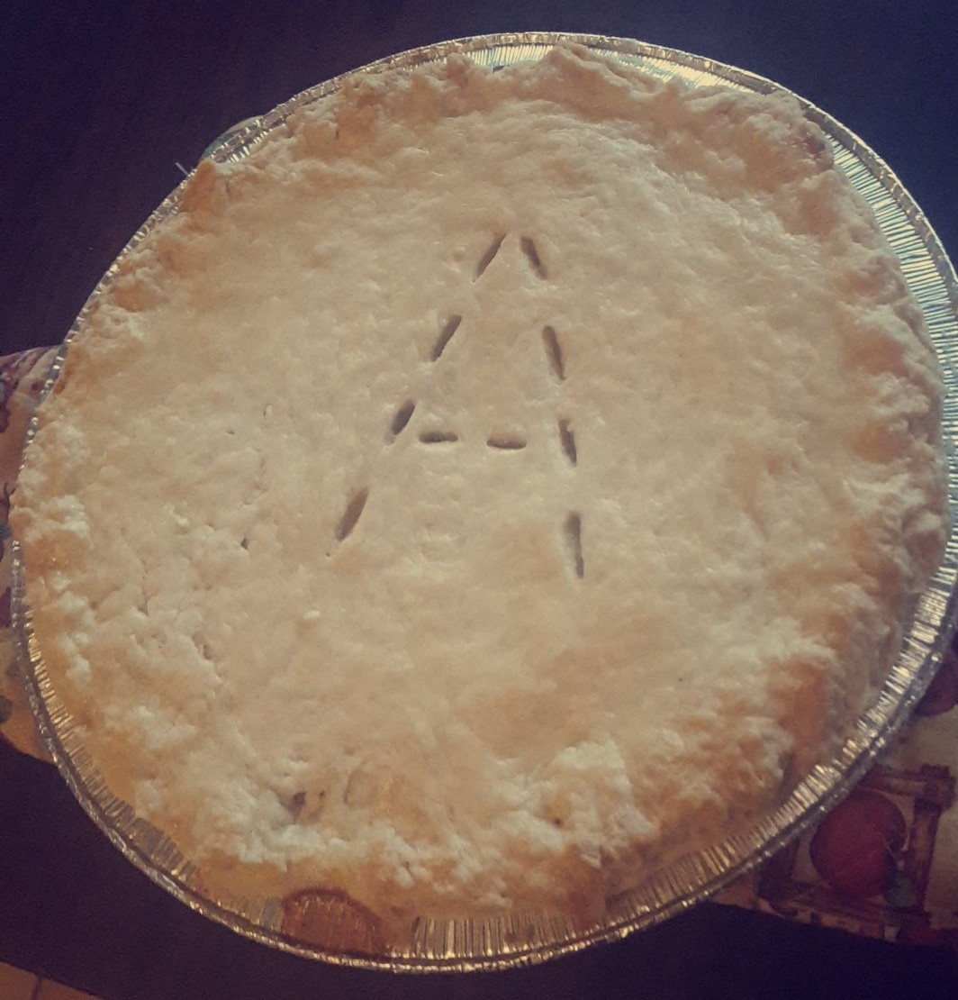
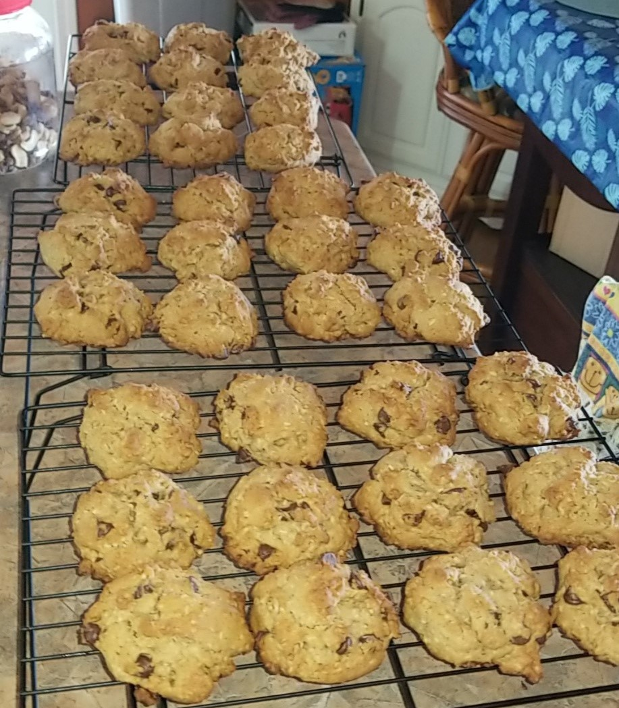
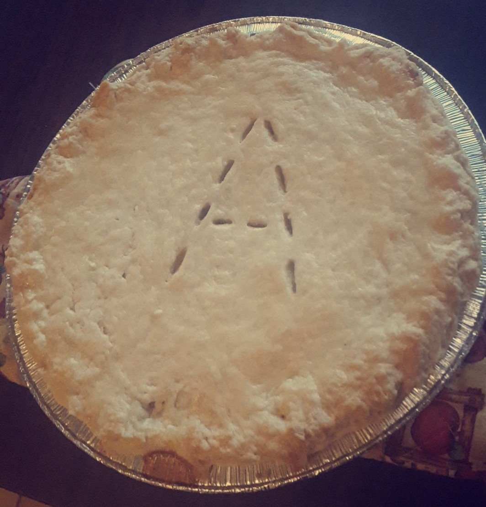
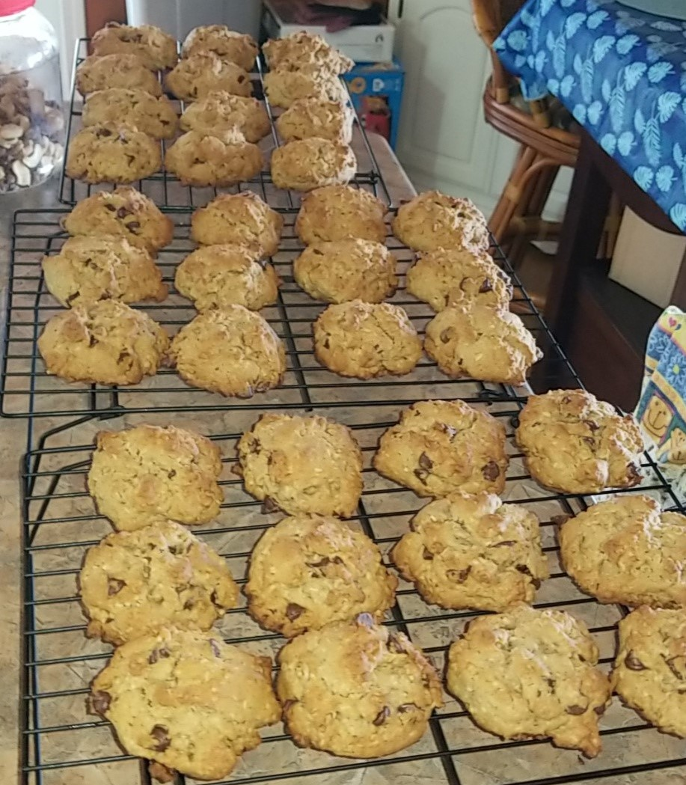
- Bread
- Mom's Best Spice Cake
- Butter Tarts
- Rich and Flaky Pie Crust
- Everything Cookies
- Clam Chowder
- Granny's Famous Stuffing
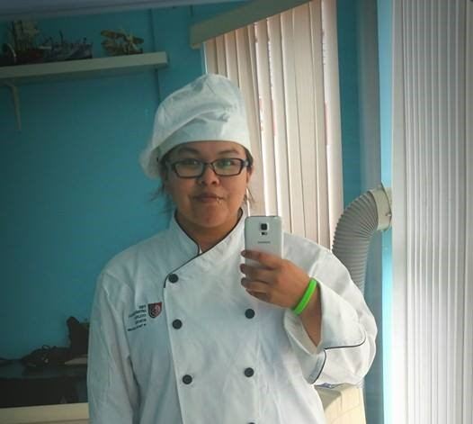
Click above for full Recipes
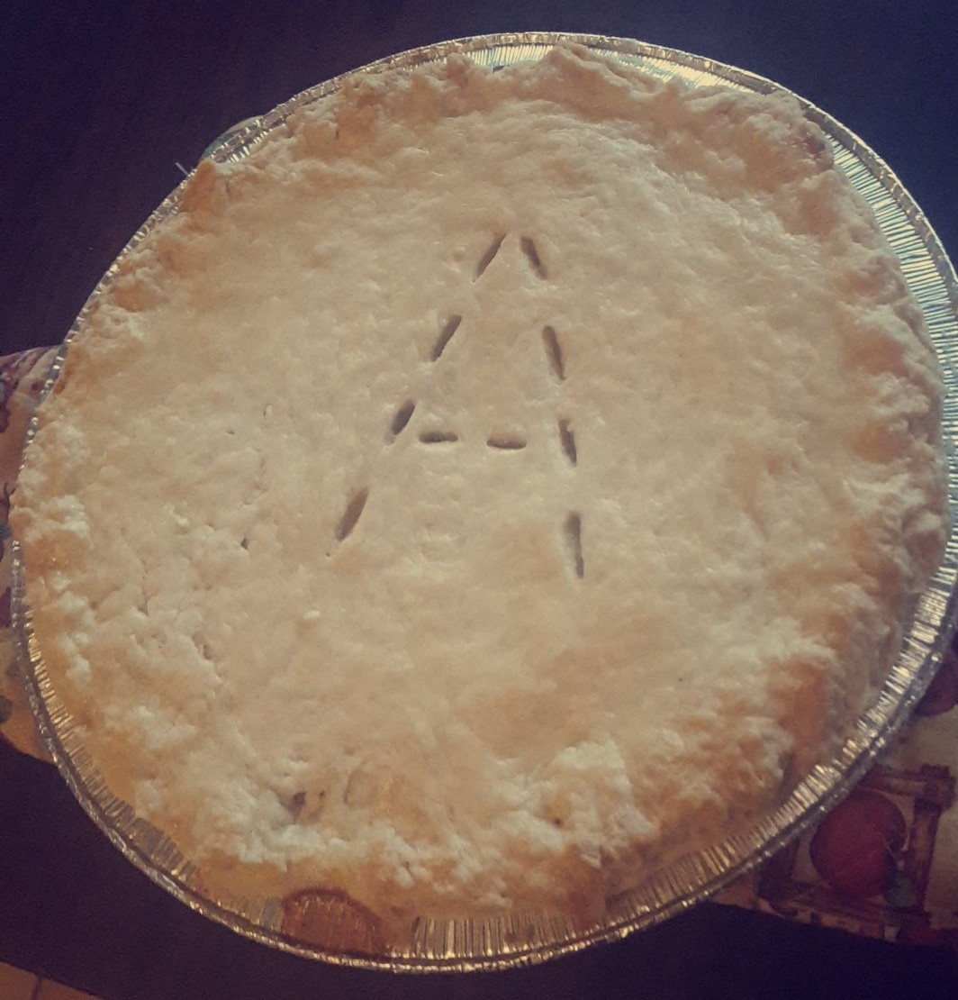
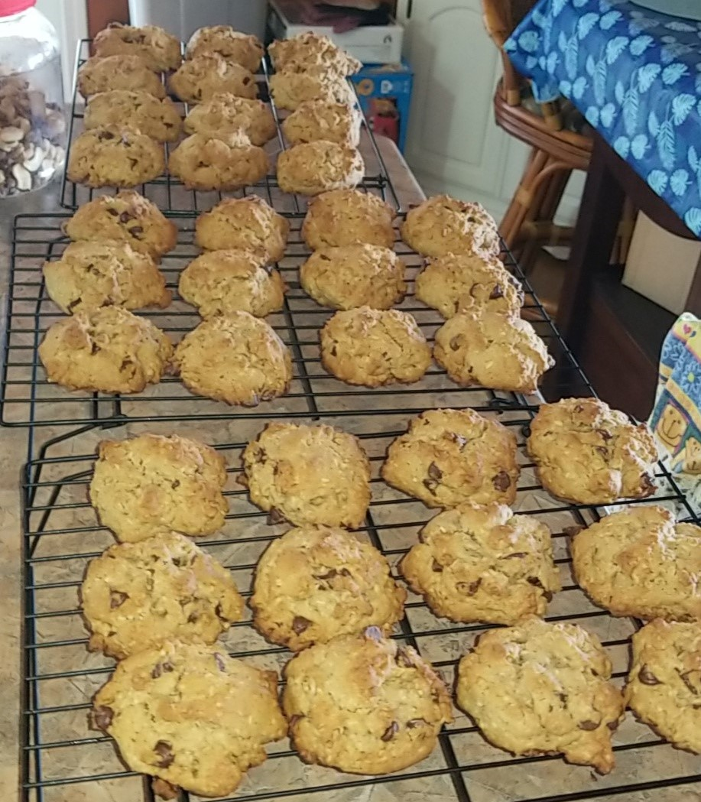
Click above for full recipes
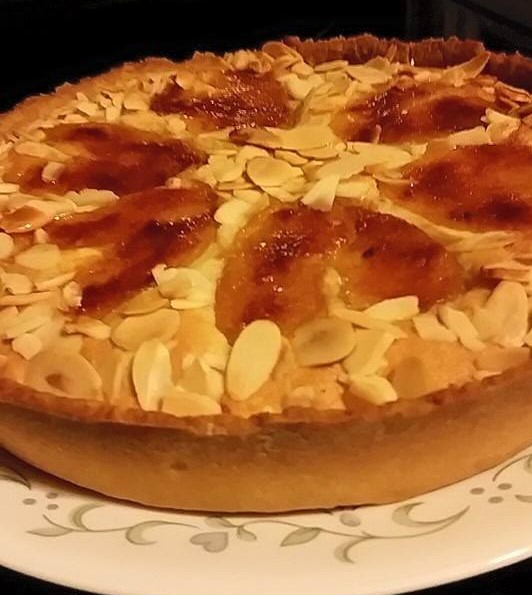 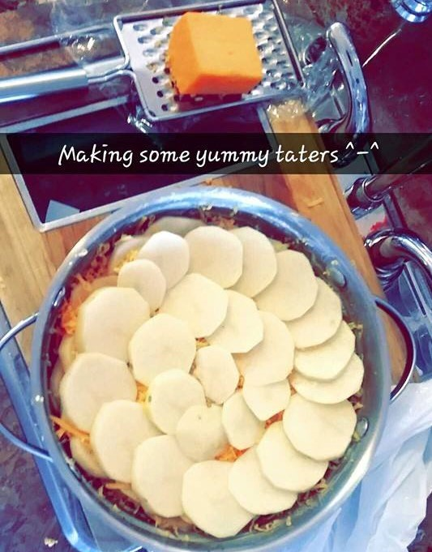 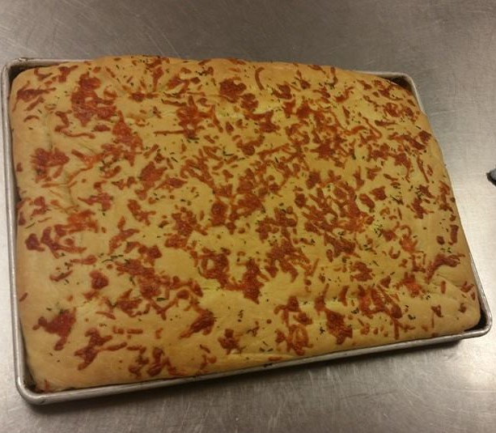 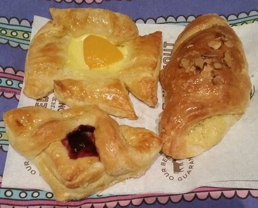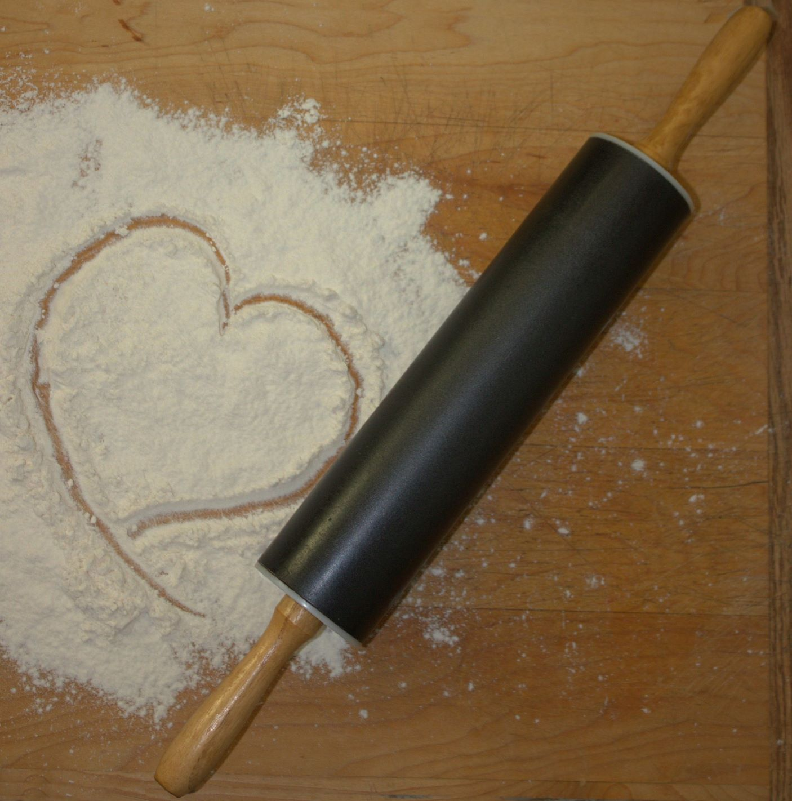